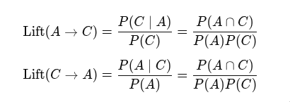

Before writing code, we must decide how to represent sets in a .csv file.
support,itemsets
0.11872533300444006,frozenset({13176})
0.05557782437099161,frozenset({47209})
0.002081277750370005,"frozenset({46979, 48679})">>> import pandas
>>> import pandas as pd
>>> df = pd.read_csv("frequent_itemsets.csv")
>>> df.dtypes
support float64
itemsets object
dtype: object
>>> df2 = pd.read_csv("groceries_basket.csv")
>>> df2.dtypes
order_id int64
product_id int64
product_name object
category object
add_to_cart_sequence_index int64
dtype: object
>>>
>>> df2['product_name'].values
array(['Bulgarian Yogurt', 'Organic Celery Hearts',
'Lightly Smoked Sardines in Olive Oil', ...,
'Organic Unsweetened Almond Milk', 'Creamy Peanut Butter',
'Broccoli Florettes'], shape=(573124,), dtype=object)
>>> type(df2['product_name'].values)
<class 'numpy.ndarray'>
>>> type(df2['product_name'].values[0])
<class 'str'>pandas’ read_csv() parses data into basic types: int64, float64, object.
Although shown as ’object’ by dtypes, its real data type is <class ’str’>.
When reduced to one dimension, df becomes a series.
>>> type(df2['product_name'])
<class 'pandas.core.series.Series'>To construct a .csv file with strings that have "," within it, we need to quote the string. After that, the parsing has no difference from a normal .csv file.
To retrieve the original set object from the <class ’str’>, there is the frozenset library.
The ast module helps processing trees of the Python abstract syntax grammar. In fact, in the .csv file, the set is stored as a line of Python code. With literal_eval, we reconstruct the frozenset object from the literal.
>>> import ast
>>> def safe_convert_frozenset(s):
... if s.startswith("frozenset(") and s.endswith(")"):
... inner = s[10:-1]
... try:
... inner_value = ast.literal_eval(inner)
... return frozenset(inner_value)
... except ValueError:
... pass
... raise ValueError("Invalid frozenset format")
...
... freq_df = df.copy()
... freq_df['itemsets'] = freq_df['itemsets'].apply(safe_convert_frozenset)
...
>>> freq_df.dtypes
support float64
itemsets object
dtype: objectWhy do we need frozenset? Why not just using the simple set?
frozenset is immutable and hashable. Therefore, if we want it to be used as the key in a dict, then we should use frozenset rather than the simple set.
For an object to be hashable, it must be immutable. A string can be used as a key because it is immutable. Any operation on a string always creates a new string object.
something deep in Python
>>> a = frozenset({1})
>>> b = frozenset({1})
>>> id(a)
140178894736064
>>> id(b)
140178894736288
>>> c[a] = 9
>>> c[b]
9
>>>
>>> a.__hash__()
-558064481276695278
>>> b.__hash__()
-558064481276695278
>>>
>>> e="a"
>>> e.__hash__()
-3006155391340656490
>>> "a".__hash__()
-3006155391340656490
>>> a = 5
>>> a.__hash__()
5
>>> a=1.23
>>> a.__hash__()
530343892119149569
>>> type(a)
<class 'float'>
>>> type(5)
<class 'int'>
>>> c[{}] = 9
Traceback (most recent call last):
File "<python-input-58>", line 1, in <module>
c[{}] = 9
~^^^^
TypeError: unhashable type: 'dict'
>>> t={}
>>> t.__hash__()
Traceback (most recent call last):
File "<python-input-60>", line 1, in <module>
t.__hash__()
~~~~~~~~~~^^
TypeError: 'NoneType' object is not callable
>>> t.__hash__
>>> type(t.__hash__)
<class 'NoneType'>
>>> type(None)
<class 'NoneType'>
>>> id(None)
94040144899728
>>> a = None
>>> b = None
>>> id(a)
94040144899728
>>> id(b)
94040144899728
>>> a = 3
>>> b = 3
>>> id(a)
94040145005360
>>> id(b)
94040145005360
# COW
>>> b = 4
>>> id(b)
94040145005392Everything in Python is an object.
We’re getting off track, let’s return to the main point.
checking for the source file:
>>> import mlxtend
>>> mlxtend.__file__
'/home/l/micromamba/envs/py313/lib/python3.13/site-packages/mlxtend/__init__.py'some basic Python concepts
There is an __init__.py in the directory, so mlxtend is a package.
Every .py file is a module.
import mlxtend: importing the package.
from mlxtend.frequent_patterns import apriori, association_rules: importing functions apriori and association_rules.
functions are also objects, of type <class ’function’>.
>>> type(association_rules)
<class 'function'>
>>> def a():
... return 1
...
>>> type(a)
<class 'function'>import foo: first check if the name is a directory, if yes, look for __init__.py, if found, then this is a package. if not, look for foo.py. if found, it is a module. then load it. loading a module: if the module object already exists, then returns. Otherwise, executes the code in foo.py from top to bottom, creates a module object and returns it.
What do we need to put in __init__.py when we want to create a package?
__init__.py can be empty if we just want a package.
In __init__.py we can expose some modules. We can use __all__ to control what we want to expose. Without __all__, everything will be exposed.
from .module1 import foo
from .module2 import barfrom mlxtend.frequent_patterns import apriori, association_rules
def safe_convert_frozenset(s):
if s.startswith("frozenset(") and s.endswith(")"):
inner = s[10:-1]
try:
inner_value = ast.literal_eval(inner)
return frozenset(inner_value)
except ValueError:
pass
raise ValueError("Invalid frozenset format")
freq_df = df.copy()
freq_df['itemsets'] = freq_df['itemsets'].apply(safe_convert_frozenset)
rules = association_rules(freq_df, metric="confidence", min_threshold=0.2, num_itemsets=orders_num).round(2)
lifts = rules['lift']
display(f"Lift's mean: {lifts.mean().round(2)}. Lift's median: {lifts.median().round(2)}.")association_rules requires df to have mandatory columns:
# check for mandatory columns
if not all(col in df.columns for col in ["support", "itemsets"]):
raise ValueError(
"Dataframe needs to contain the\
columns 'support' and 'itemsets'"
)>>> df.columns
Index(['order_id', 'product_id', 'product_name', 'category',
'add_to_cart_sequence_index'],
dtype='object')
>>> 'order_id' in df.columns
True
>>> type(df.columns)
<class 'pandas.core.indexes.base.Index'>How does ’in’ work in Python?
>>> df.columns.__contains__
<bound method Index.__contains__ of Index(['order_id', 'product_id', 'product_name', 'category',
'add_to_cart_sequence_index'],
dtype='object')>
>>> a=[]
>>> type(a.__contains__)
<class 'method-wrapper'>If I implement a class with the function __contains__, then such a class works with the ’in’ keyword.
>>> class MyContainer:
... def __contains__(self, item):
... return item % 2 == 0 # only even numbers are "in" this container
...
... c = MyContainer()
...
... print(2 in c) # True
... print(3 in c) # False
...
True
FalseKulczynski similarity coefficient: it’s a measure of similarity between sets or vectors.
def kulczynski_helper(sAC, sA, sC, disAC, disA, disC, dis_int, dis_int_):
conf_AC = sAC * (num_itemsets - disAC) / (sA * (num_itemsets - disA) - dis_int)
conf_CA = sAC * (num_itemsets - disAC) / (sC * (num_itemsets - disC) - dis_int_)
kulczynski = (conf_AC + conf_CA) / 2
return kulczynski
# metrics for association rules
metric_dict = {
"antecedent support": lambda _, sA, ___, ____, _____, ______, _______, ________: sA,
"consequent support": lambda _, __, sC, ____, _____, ______, _______, ________: sC,
"support": lambda sAC, _, __, ___, ____, _____, ______, _______: sAC,
"confidence": lambda sAC, sA, _, disAC, disA, __, dis_int, ___: (
sAC * (num_itemsets - disAC)
)
/ (sA * (num_itemsets - disA) - dis_int),
"lift": lambda sAC, sA, sC, disAC, disA, disC, dis_int, dis_int_: metric_dict[
"confidence"
](sAC, sA, sC, disAC, disA, disC, dis_int, dis_int_)
/ sC,
"representativity": lambda _, __, ___, disAC, ____, ______, _______, ________: (
num_itemsets - disAC
)
/ num_itemsets,
"leverage": lambda sAC, sA, sC, _, __, ____, _____, ______: metric_dict[
"support"
](sAC, sA, sC, disAC, disA, disC, dis_int, dis_int_)
- sA * sC,
"conviction": lambda sAC, sA, sC, disAC, disA, disC, dis_int, dis_int_: conviction_helper(
metric_dict["confidence"](
sAC, sA, sC, disAC, disA, disC, dis_int, dis_int_
),
sC,
),
"zhangs_metric": lambda sAC, sA, sC, disAC, disA, disC, dis_int, dis_int_: zhangs_metric_helper(
sAC, sA, sC, disAC, disA, disC, dis_int, dis_int_
),
"jaccard": lambda sAC, sA, sC, _, __, ____, _____, ______: jaccard_metric_helper(
sAC, sA, sC, disAC, disA, disC, dis_int, dis_int_
),
"certainty": lambda sAC, sA, sC, _, __, ____, _____, ______: certainty_metric_helper(
sAC, sA, sC, disAC, disA, disC, dis_int, dis_int_
),
"kulczynski": lambda sAC, sA, sC, _, __, ____, _____, ______: kulczynski_helper(
sAC, sA, sC, disAC, disA, disC, dis_int, dis_int_
),
}What is the zip object?
zip(*iterables, strict=False)
>>> a = range(3)
>>> type(a)
<class 'range'>
>>> a.__iter__()
<range_iterator object at 0x7f8f317819b0>
>>>
>>> b='abcd'
>>> b.__iter__()
<str_ascii_iterator object at 0x7f8f327acaf0>
>
>>> bi = b.__iter__()
>>> type(bi)
<class 'str_ascii_iterator'>
>>> ai=a.__iter__()
>>> type(ai)
<class 'range_iterator'>
>>> list(zip('abcdefg', range(3), range(4)))
[('a', 0, 0), ('b', 1, 1), ('c', 2, 2)]
>>> type(t)
<class 'zip'>
>>> t.__iter__()
<zip object at 0x7f8f31136000>
>>> type(t.__iter__())
<class 'zip'>*iterables: * unlimited input parameters.
# get dict of {frequent itemset} -> support
keys = df["itemsets"].values
values = df["support"].values
frozenset_vect = np.vectorize(lambda x: frozenset(x))
frequent_items_dict = dict(zip(frozenset_vect(keys), values))zip: create a zip object, each element is a tuple of key-value.
>>> d = dict([('a', 2), ('b', 3)])
>>> d
{'a': 2, 'b': 3}
>>> type(df["order_id"].values)
<class 'numpy.ndarray'>
>>> type(df["order_id"].values[0])
<class 'numpy.int64'>
Help on class zip in module builtins:
Help on class int64 in module numpy:
import numpy
import builtins
help(numpy)
Help on package numpy:
NAME
numpy
DESCRIPTION
NumPy
=====
Provides
1. An array object of arbitrary homogeneous items
2. Fast mathematical operations over arrays
3. Linear Algebra, Fourier Transforms, Random Number Generation
How to use the documentation
----------------------------
help(builtins)
Help on built-in module builtins:
NAME
builtins - Built-in functions, types, exceptions, and other objects.
DESCRIPTION
This module provides direct access to all 'built-in'
identifiers of Python; for example, builtins.len is
the full name for the built-in function len().
This module is not normally accessed explicitly by most
applications, but can be useful in modules that provide
objects with the same name as a built-in value, but in
which the built-in of that name is also needed.
>>> builtins.__file__
Traceback (most recent call last):
File "<python-input-59>", line 1, in <module>
builtins.__file__
AttributeError: module 'builtins' has no attribute '__file__'. Did you mean: '__name__'?
>>> numpy.__file__
'/home/l/micromamba/envs/py313/lib/python3.13/site-packages/numpy/__init__.py'The builtins module is implemented in Python/bltinmodule.c (cpython).
builtins is a module, but numpy is a package.
PyTypeObject PyFilter_Type = {
PyTypeObject PyMap_Type = {
PyTypeObject PyZip_Type = {
SETBUILTIN("None", Py_None);
SETBUILTIN("Ellipsis", Py_Ellipsis);
SETBUILTIN("NotImplemented", Py_NotImplemented);
SETBUILTIN("False", Py_False);
SETBUILTIN("True", Py_True);
SETBUILTIN("bool", &PyBool_Type);
SETBUILTIN("memoryview", &PyMemoryView_Type);
SETBUILTIN("bytearray", &PyByteArray_Type);
SETBUILTIN("bytes", &PyBytes_Type);
SETBUILTIN("classmethod", &PyClassMethod_Type);
SETBUILTIN("complex", &PyComplex_Type);
SETBUILTIN("dict", &PyDict_Type);
SETBUILTIN("enumerate", &PyEnum_Type);
SETBUILTIN("filter", &PyFilter_Type);
SETBUILTIN("float", &PyFloat_Type);
SETBUILTIN("frozenset", &PyFrozenSet_Type);
SETBUILTIN("dict", &PyDict_Type);>>> type(numpy)
<class 'module'>
>>> type(numpy.int64)
<class 'type'>
>>> type(builtins)
<class 'module'>Both packages and modules are represented as <class ’module’> in Python’s runtime.
packages and modules are mostly the same. A package in its nature is no more than modules living in a namespace specified by __init__.py.
Now that association_rules has built the frequent_items_dict. It’s time to collect frequent rules.
# prepare buckets to collect frequent rules
rule_antecedents = []
rule_consequents = []
rule_supports = []null_values : bool (default: False)
In case there are null values as NaNs in the original input data
# if null values exist, df_orig must be provided
if null_values and df_orig is None:
raise TypeError("If null values exist, df_orig must be provided.")
# if null values exist, num_itemsets must be provided
if null_values and num_itemsets == 1:
raise TypeError("If null values exist, num_itemsets must be provided.")
for k in frequent_items_dict.keys():
sAC = frequent_items_dict[k]
# to find all possible combinationsIteration through a dict with .keys() is not as efficient as with .items(). Because with .keys(), it needs one more indexing step to fetch the value.
# to find all possible combinations
for idx in range(len(k) - 1, 0, -1):
# of antecedent and consequent
>>> for i in range(5, 0, -1):
... print(i)
...
5
4
3
2
1
>>> for i in range(0, 5):
... print(i)
...
0
1
2
3
4
>>> a=frozenset({1,2})
>>> b=frozenset({2,1})
>>> a
frozenset({1, 2})
>>> b
frozenset({1, 2})
>>> a==b
True
>>> for i in range(0, 0, -1):
... print(i)
...
>>>
# loops: 0from itertools import combinations
# of antecedent and consequent
for c in combinations(k, r=idx):
antecedent = frozenset(c)
consequent = k.difference(antecedent)
class combinations(builtins.object)
| combinations(iterable, r)
|
| Return successive r-length combinations of elements in the iterable.
|
| combinations(range(4), 3) --> (0,1,2), (0,1,3), (0,2,3), (1,2,3)The support_only parameter:
try:
sA = frequent_items_dict[antecedent]
sC = frequent_items_dict[consequent]
except KeyError as e:
s = (
str(e) + "You are likely getting this error"
" because the DataFrame is missing "
" antecedent and/or consequent "
" information."
" You can try using the "
" `support_only=True` option"
)
raise KeyError(s)
support_only : bool (default: False)
Only computes the rule support and fills the other
metric columns with NaNs. This is useful if:
a) the input DataFrame is incomplete, e.g., does
not contain support values for all rule antecedents
and consequents
b) you simply want to speed up the computation because
you don't need the other metrics.If a set is a frequent itemset, then all of its subsets are also frequent itemsets. This means we won’t need to use the support_only in most cases.
How does it handle with null_values?
# if null values exist, df_orig must be provided
if null_values and df_orig is None:
raise TypeError("If null values exist, df_orig must be provided.")
# check for valid input
fpc.valid_input_check(df_orig, null_values)>>> df.shape
(1977, 2)
>>> df.shape[0]
1977
>>> len(df)
1977
>>> hasattr(df, "sparse")
False
>>> hasattr(df, "dtypes")
True
>>> hasattr(df, "groupby")
True
Help on built-in function hasattr in module builtins:
hasattr(obj, name, /)
Return whether the object has an attribute with the given name.
This is done by calling getattr(obj, name) and catching AttributeError.df.dtypes is a series.
>>> df.dtypes
support float64
itemsets object
dtype: object
>>> type(df.dtypes)
<class 'pandas.core.series.Series'>
if f"{type(df)}" == "<class 'pandas.core.frame.SparseDataFrame'>":
msg = (
"SparseDataFrame support has been deprecated in pandas 1.0,"
" and is no longer supported in mlxtend. "
" Please"
" see the pandas migration guide at"
" https://pandas.pydata.org/pandas-docs/"
"stable/user_guide/sparse.html#sparse-data-structures"
" for supporting sparse data in DataFrames."
)
raise TypeError(msg)
# Fast path: if all columns are boolean, there is nothing to checks
if null_values:
all_bools = (
df.apply(lambda col: col.apply(lambda x: pd.isna(x) or isinstance(x, bool)))
.all()
.all()
)
else:
all_bools = df.dtypes.apply(pd.api.types.is_bool_dtype).all()
if not all_bools:
...
Help on function is_bool_dtype in module pandas.core.dtypes.common:
is_bool_dtype(arr_or_dtype) -> 'bool'
Check whether the provided array or dtype is of a boolean dtype.
>>> df["a"]=False
>>> pd.api.types.is_bool_dtype(df["a"])
True
>>> pd.api.types.is_bool_dtype([True])
False
>>> isinstance(1, int)
True
>>> df.apply(lambda x: print(type(x)))
<class 'pandas.core.series.Series'>
<class 'pandas.core.series.Series'>
<class 'pandas.core.series.Series'>
support None
itemsets None
a None
dtype: object
>>> df
support itemsets a
0 0.118725 frozenset({13176}) False
1 0.055578 frozenset({47209}) False
2 0.015432 frozenset({22035}) False
3 0.008048 frozenset({10246}) False
4 0.029462 frozenset({46979}) False
... ... ... ...
1972 0.003176 frozenset({46906, 24852}) False
1973 0.001542 frozenset({46906, 21903}) False
1974 0.001634 frozenset({18523, 24852}) False
1975 0.001788 frozenset({33754, 33787}) False
1976 0.001788 frozenset({33754, 99933787}) False
[1977 rows x 3 columns]
Help on method apply in module pandas.core.frame:
apply(
func: 'AggFuncType',
axis: 'Axis' = 0,
raw: 'bool' = False,
result_type: "Literal['expand', 'reduce', 'broadcast'] | None" = None,
args=(),
by_row: "Literal[False, 'compat']" = 'compat',
engine: "Literal['python', 'numba']" = 'python',
engine_kwargs: 'dict[str, bool] | None' = None,
**kwargs
) method of pandas.core.frame.DataFrame instance
Apply a function along an axis of the DataFrame.
Objects passed to the function are Series objects whose index is
either the DataFrame's index (``axis=0``) or the DataFrame's columns
(``axis=1``). By default (``result_type=None``), the final return type
is inferred from the return type of the applied function. Otherwise,
it depends on the `result_type` argument.
df.apply(func, axis=0) # default axis=0axis=0: move in the direction of rows, that is, to apply on a column
axis=1: move in the direction of columns, that is, to apply on a row
The default axis is 0, therefore, df.apply applies the function on columns.
>>> df.apply(lambda x: print(1))
1
1
1
support None
itemsets None
a None
dtype: object
>>> b=df.apply(lambda x: print(1))
1
1
1
>>> b
support None
itemsets None
a None
dtype: object
>>> type(b)
<class 'pandas.core.series.Series'>
>>> b=df.apply(lambda x: 1)
>>> b
support 1
itemsets 1
a 1
dtype: int64
>>> b.dtype
dtype('int64')
>>> df.apply(lambda x: type(x.dtype))
support <class 'numpy.dtypes.Float64DType'>
itemsets <class 'numpy.dtypes.ObjectDType'>
a <class 'numpy.dtypes.BoolDType'>
dtype: objectThis line iterates through columns of df, and for each column (type Series) iterates through each value, and for each value checks isna or isinstance.
The shape of the resulting df is the same as the original, but values are transformed into bools.
df.apply(lambda col: col.apply(lambda x: pd.isna(x) or isinstance(x, bool)))
>>> b = df.apply(lambda col: col.apply(lambda x: pd.isna(x) or isinstance(x, bool)))
>>> type(b)
<class 'pandas.core.frame.DataFrame'>
>>> b
support itemsets a
0 False False True
1 False False True
2 False False True
3 False False True
4 False False True
... ... ... ...
1972 False False True
1973 False False True
1974 False False True
1975 False False True
1976 False False True
[1977 rows x 3 columns]
Help on method all in module pandas.core.frame:
all(
axis: 'Axis | None' = 0,
bool_only: 'bool' = False,
skipna: 'bool' = True,
**kwargs
) -> 'Series | bool' method of pandas.core.frame.DataFrame instance
Return whether all elements are True, potentially over an axis.Without specifying axis, all() iterates through all columns (in the direction of rows), treated each column as an array and checks if all values are True.
The result is a Series with column names as indices.
df.apply(lambda col: col.apply(lambda x: pd.isna(x) or isinstance(x, bool)))
.all()
.all()
>>> df.all().all()
np.False_
>>> t=df.all().all()
>>> t.__bool__()
False
>>> False.__bool__()
FalseBy applying all() for 2 times, this line checks whether all values in the 2-dimensional matrix are all True values.
Applying all() on a Series reduces a Series to a single value.
valid_input_check returns nothing. It raises an exception only if it finds the data invalid. Whether the data is all True or nothing, it won’t matter.
In association_rules(), it checks for df_orig, which defaults to None, hence this check never fails for our case.
# check for valid input
fpc.valid_input_check(df_orig, null_values)Supports of antecedent and consequent.
sA = frequent_items_dict[antecedent]
sC = frequent_items_dict[consequent]
# if the input dataframe is complete
if not null_values:
disAC, disA, disC, dis_int, dis_int_ = 0, 0, 0, 0, 0
else:
an = list(antecedent)A large part of the code handles the case with null_values = True. In our case, we passed in df and used the default null_values = False.
Hence, we jump directly to the core logic.
score = metric_dict[metric](
sAC, sA, sC, disAC, disA, disC, dis_int, dis_int_
)
if score >= min_threshold:
rule_antecedents.append(antecedent)
rule_consequents.append(consequent)
rule_supports.append(
[sAC, sA, sC, disAC, disA, disC, dis_int, dis_int_]
)We keep the rule if we found it larger than the min_threshold.
These dis* values are all zeros because our input dataframe is complete.
The computation for the confidence metric is simple:
"confidence": lambda sAC, sA, _, disAC, disA, __, dis_int, ___: (
sAC * (num_itemsets - disAC)
)
/ (sA * (num_itemsets - disA) - dis_int),The dis* prefix means disabled. In our case, our df is complete, so there are no disabled itemsets.
In our case, since df is a complete dataframe, the value of num_itemsets is canceled out.
Basically, "confidence" computes the probability of: if A happens, then what is the probability of C happens. P(C|A).
Association rules are computed only from frequent itemsets with at least two items.
In Python, if we loaded a module, and then we modified it in the source code and import again, the module doesn’t get changed. Because the runtime thinks the module has been loaded already, the duplicated import statement will be ignored.
To force a reload, use this:
importlib.reload(mymodule)To check an empty list:
>>> a=[]
>>> if a:
... print(1)
...
>>> a=[1]
>>> if a:
... print(1)
...
1
# check if frequent rule was generated
if not rule_supports:
return pd.DataFrame(columns=["antecedents", "consequents"] + return_metrics)
else:
# generate metrics
rule_supports = np.array(rule_supports).T.astype(float)
_metrics = [
"antecedent support",
"consequent support",
"support",
"confidence",
"lift",
"representativity",
"leverage",
"conviction",
"zhangs_metric",
"jaccard",
"certainty",
"kulczynski",
]Construct the output:
# generate metrics
rule_supports = np.array(rule_supports).T.astype(float)
df_res = pd.DataFrame(
data=list(zip(rule_antecedents, rule_consequents)),
columns=["antecedents", "consequents"],
)
if support_only:
sAC = rule_supports[0]
for m in return_metrics:
df_res[m] = np.nan
df_res["support"] = sAC
else:
sAC = rule_supports[0]
sA = rule_supports[1]
sC = rule_supports[2]
disAC = rule_supports[3]
disA = rule_supports[4]
disC = rule_supports[5]
dis_int = rule_supports[6]
dis_int_ = rule_supports[7]
for m in return_metrics:
df_res[m] = metric_dict[m](
sAC, sA, sC, disAC, disA, disC, dis_int, dis_int_
)
return df_res
>>> rule_supports=[[1,2,3],[4,5,6]]
>>> rule_supports = np.array(rule_supports).T.astype(float)
>>> type(rule_supports)
<class 'numpy.ndarray'>
>>> rule_supports
array([[1., 4.],
[2., 5.],
[3., 6.]])
>>> rule_supports[0]
array([1., 4.])
>>> rule_supports[0][1]
np.float64(4.0)np.array transforms an array into a matrix. This makes adding columns to df easy.
Here it only checks the score for the specific metric and makes sure it is above threshold. For the returning output, it computes all available metrics.
That is also why we have lifts in the returning result.
score = metric_dict[metric](
sAC, sA, sC, disAC, disA, disC, dis_int, dis_int_
)
if score >= min_threshold:
rule_antecedents.append(antecedent)
rule_consequents.append(consequent)
rule_supports.append(
[sAC, sA, sC, disAC, disA, disC, dis_int, dis_int_]
)
for m in return_metrics:
df_res[m] = metric_dict[m](
sAC, sA, sC, disAC, disA, disC, dis_int, dis_int_
)
"lift": lambda sAC, sA, sC, disAC, disA, disC, dis_int, dis_int_: metric_dict[
"confidence"
](sAC, sA, sC, disAC, disA, disC, dis_int, dis_int_)
/ sC,Lift is computed as confidence divided by the consequent. (P(AC) / P(A) / P(C))

This makes sense. If events A and C are independent, then the lift is 1. That is, the occuring of one event does not improve the odds for the other.